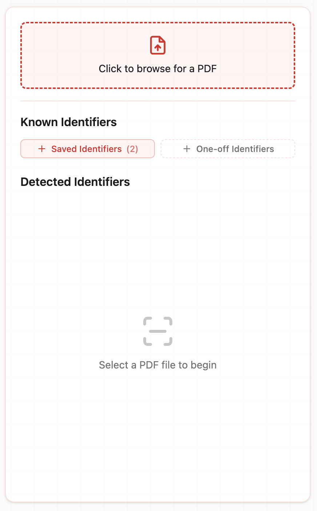
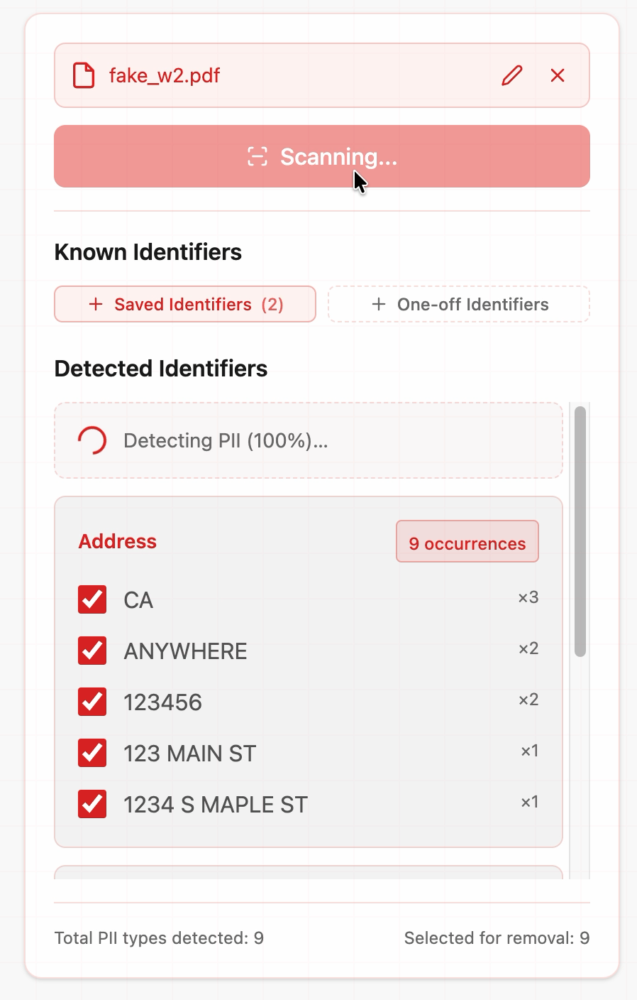
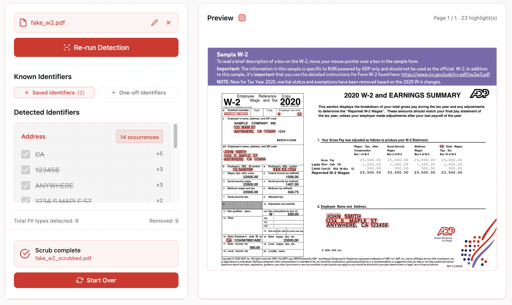

Redact identities from PDFs,
right on your desktop.
- No uploads, no cloud, no login. Your documents never leave your machine.
- Preview & pick. Review every detection, add your own identifiers.
- On-device detection. Names, SSNs, DOBs, emails, addresses, phones, and more.
- Free to start. Daily free quota, extra bonus in week 1, prepaid licenses for more.
How it works
Drop in a PDF
Open the desktop app and select any PDF — scanned or native.

Detect
Pages are OCR'd and run through the PII model. You'll see each detection highlighted on the page.

Scrub & save
Pick which items to redact, then export a clean PDF with the sensitive regions blacked out.

Pricing
Free daily quota to start. Buy a prepaid pack for more pages.
Checkout is handled by Lemon Squeezy. Pages appear in the app automatically once payment is confirmed.
Get Identity Scrubber
Free tier with a daily quota. Buy a prepaid license for more pages.